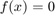
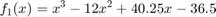
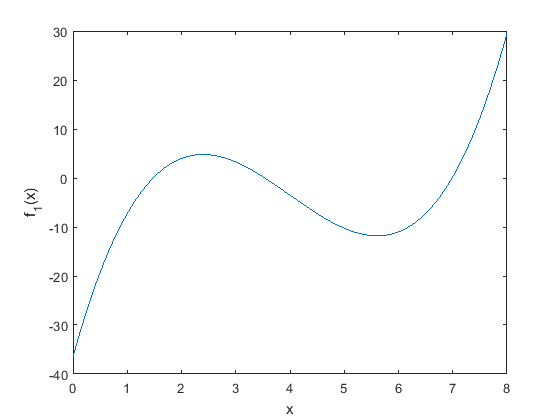
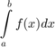
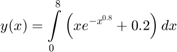
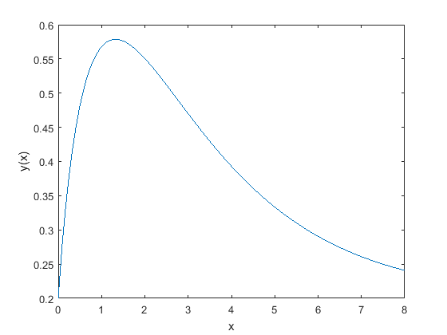

Chapter 9 Notes Part 1
Numerical methods are commonly used for solving mathematical problems that are formulated in science and engineering where it is difficult or impossible to obtain exact solutions.
The following topics are presented in this chapter:
- Solving an equation with one unknown
- Finding a minimum or a maximum of a function
- Numerical integration
- Solving first-order ordinary differential equations
Contents
Solving Equation with One Variable
To use the methods described in this section, the equations to be solved should be written in the following form:

Values of 'x' that make f(x) equal to 0 are called solutions or roots of the equation. If such a value does not exist or is difficult to determine, a numerical solution can be determined by finding an x that is very close to the solution.
Note: If f(x) is a polynomial, use Matlab's built-in 'roots' function. as described in a previous chapter
In MATLAB a zero of a function can be determined with the command fzero with the form:
x = fzero(f_x, x0)
where
- x is the solution
- f_x is the function to be solved
- x0 value of x close to where the function crossed the axis
Specifying f_x
The function 'f_x' may be specified using the following methods
- Enter the mathematical expression for f_x as a string
- Pass a handle to a user defined function file the implements f_x
- Create an anonymous function for f_x and pass the name of the anonymous function
Passing function handles (the last two options specified above) are the preferred methods.
Final Notes of fzero
x0 can be a scalar or a two element vector. When it is a scalar, it represents and x value where the f_x is close to zero. When it is a two element vector it represents two points on opposite sides of the solution. When the function has more than one solution, each solution must be solved for separately by using multiple calls to the fzero function.
A good way approximate the region in which a function has a solution is to make a plot of the function. In many applications in science and engineering the domain of the solution can be estimated. A plot of the function over the domain may yield valuable information.
Finding a Minimum or Maximum of a Function: fminbnd()
Given the mathematical form of the equation, we could use Calculus to find the maximum or minimum by finding the "critical points" or points where the derivative of the function equals zero. Since the derivative of the function equals zero at local minimums or local maximums, you have to investigate the sign of the second derivative at the critical point to differentiate between local mins and maxs.
In MATLAB the value of x where a one-variable function f(x) within the interval
has a minimum can be determined with the fminbnd command which has the form:
x = fminbnd(inpFunc,x1,x2)
where
- x: The value of the independent variable where the input function as a minimum
- inpFunc: Handle to the input function
- x1, x2: The upper and lower bounds of the interval where we are looking for critical points
Note: The value of the minimum or maximum could be at one of the endpoints of the interval
For example, let's find the minimum of the following function:

%Create a handle to the function (in this case we will use an anonymous %functio f1_x = @(x) x.^3 - 12*x.^2 + 40.25 * x - 36.5 %Now let's plot the function limit_l = 0 limit_h = 8 %Create an independent variables for plotting f1_inp = linspace(limit_l,limit_h,100); f1_out = feval(f1_x,f1_inp); plot(f1_inp,f1_out) ylabel('f_1(x)') xlabel('x') %Now let's find the minimum for a few different ranges: [min_1, fval] = fminbnd(f1_x,limit_l+0.001,limit_h-3.5) % Should get the value of the function at x = 0; [min_2,fval2] = fminbnd(f1_x,limit_l+2,limit_h) % Should find the local minimum [min_3,fval3] = fminbnd(f1_x,limit_l+7,limit_h) % Should find the value at the lower limit
f1_x =
function_handle with value:
@(x)x.^3-12*x.^2+40.25*x-36.5
limit_l =
0
limit_h =
8
min_1 =
0.0010
fval =
-36.4583
min_2 =
5.6073
fval2 =
-11.8043
min_3 =
7.0001
fval3 =
0.2513
 Using fminbnd() to find a maximum
Simply multiply the function by -1 before calling fminbnd()
Numerical Integration
Integration of simple functions can be done analytically, but more involved functions are frequently difficult or impossible to integrate analytically. In calculus courses the integrand (the quantity to be integrated) is usually a function. In applications of science and engineering the integrand can be a function or a set of data points. For example, data points from discrete measurements of flow velocity can be used to calculate volume.
A definite integral of a function f(x) from a to -b_ has the form

The function f(x) is called the integrand and a and b are the limits of integration.
Graphically, the value of the integral q is the area q between the graph of the function, the x axis, and X the limits a and b (the shaded area in the figure).

When a definite integral is calculated analytically f(x) is always a function. When the integral is calculated numerically f(x) can be a function or a set of points. In numerical integration the total area is obtained by dividing the area into small sections, calculating the area of each section, and adding them up. Various numerical methods have been developed for this purpose. The difference between the methods is in the way that the area is divided into sections and the method by which the area of each section is calculated.
The following discussion describes how to use the three MATLAB built-in integration functions quad, quadl, and trapz. The quad and quadl commands are used for integration when f(x) is a function, and trapz is used when f(x) is given by data points.
quad and quadl
Both of these functions return the solution to a definite integral. They differ in the method used to obtain the approximation. quad uses an adaptive Simpson method for the integration, quadl uses adaptive Labatto method.
q = quad(integrand,a,b)
- integrand is the mathematical expression of the integrand. Can be entered as a string or a function handle. The function handle method is preferred for this class.
- a is the lower limit
- b is the upper limit
Note that _integrand must be written for an argument x that is a vector (use element-by-element operations) such that it calculates the value of the function for each element of x._
Finally, quad calculates the integral with an absolute error that is smaller than 1.0e-6. This number can be changed by adding an optional tol argument to the command:
q = quad('intergrand',a,b,tol)
tol is a number that defines the maximum error. With larger 'tol' the integral is calculated less accurately but faster.
quadl
The form of the quadl (the last letter is a lowercase L) command is exactly the same as that of the quad command:
q = quadl(integrand,a,b)
All of the comments that are listed for the quad command are valid for the quadl command.
Let's use numerical integration to calculate the following integral:

%First let's create an anonymous function for the integrand integrand_x = @(x) x.*exp(-x.^0.8) + 0.2 %Specify the integral limits limit_l = 0 limit_h = 8 xRange = linspace(limit_l,limit_h,100); yRange = feval(integrand_x,xRange); plot(xRange,yRange); xlabel('x') ylabel('y(x)') y_x = quad(integrand_x,limit_l,limit_h)
integrand_x =
function_handle with value:
@(x)x.*exp(-x.^0.8)+0.2
limit_l =
0
limit_h =
8
y_x =
3.1604
 trapz
The trapz command can be used for integrating a function that is given as data points. It uses the numerical trapezoidal method of integration. The form of the command is
q = trapz (x,y)
- x and y are vectors with the x andy coordinates of the points, respectively.
- The two vectors must be of the same length.
%Let's use trapz to estimate the integral of % % $$ y_t(x) = \int \limits_0^8 \left ( xe^{-x^{0.8}} + 0.2 \right ) dx $$ %We already created everything we needed in the last section y_tx = trapz(xRange,yRange)
y_tx =
3.1599
Example Problems
3, 7, 8, 14, 16, 18, 21, 28
ans =
3
ans =
7
ans =
8
ans =
14
ans =
16
ans =
18
ans =
21
ans =
28